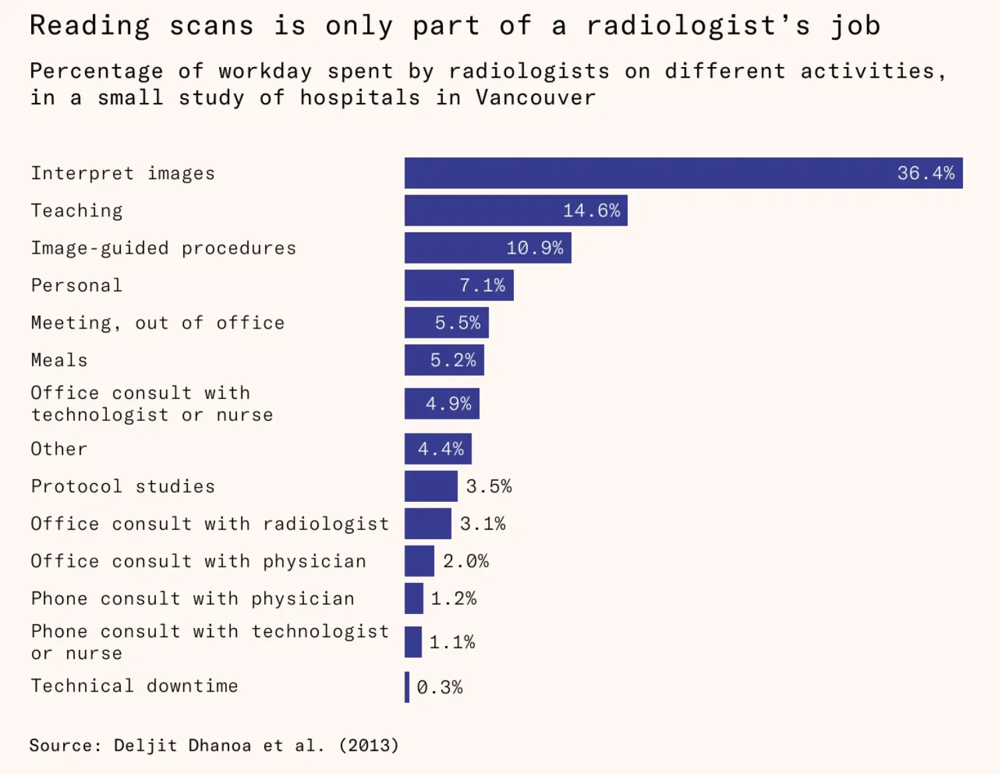
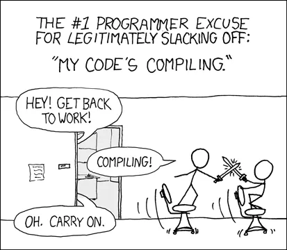
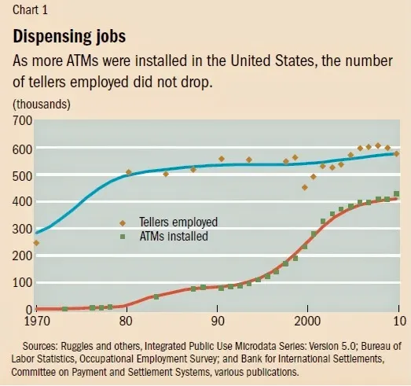
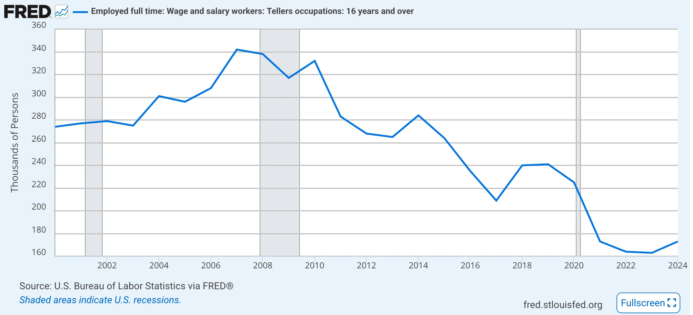

The wrong lesson from AI not replacing Radiologists
This article from Works in Progress starts off with how good AI has become in reading x-rays:
CheXNet can detect pneumonia with greater accuracy than a panel of board-certified radiologists. It is an AI model released in 2017, trained on more than 100,000 chest X-rays. It is fast, free, and can run on a single consumer-grade GPU. A hospital can use it to classify a new scan in under a second.
The rest of the article goes on how explain how AI has generally failed at automating radiology and radiologists’ jobs are safe.
“AI will take your job”
or
“AI won’t take your job, someone using AI will”
are the two primary, opposing refrains you’ll hear when it comes to the topic. Last week this debate got dredged up again on Twitter thanks to the article above. The fear in people’s minds about AI taking their jobs is indeed real. If you’ve seen The Studio on Apple TV, Episode 7 is masterfully done satire about it from Hollywood’s perspective. My conversations with BPO employees have echoed the same fear.
Let’s quickly run through the main discussion floating around on the socials, and then I’ll lay out what is likely to happen and why AI is a force for ‘creative destruction’ - i.e. it will eliminate many jobs.
The debate
A product manager who worked at Nines, an AI-enabled Radiology practice wrote about why Nines and many other companies that built successful radiology tech and products ultimately failed: www.outofpocket.health/p/why-radiology-ai-didnt-work-and-what-comes-next. (ChatGPT summary here)
Clinical documentation, especially in radiology, is filled with hedge language — phrases like “cannot rule out,” “may represent”… For AI, this is a labeling nightmare. Unlike doctors who interpret language in context, AI learns from patterns in text. If hedge language is ubiquitous, the model will overpredict follow-ups, degrading both specificity and clinical utility.
you could build more accurate, explainable, and clinically responsible AI by focusing on narrow use cases. That’s what many of us did. … But hospitals and radiology groups don’t want to contract with 10 vendors for 10 narrow AI tools.
If a radiologist misreads a scan, the patient or family can seek legal recourse. Doctors carry insurance. They can be sanctioned. They can lose their license. But what happens when an AI model makes the error?
The Works in Progress article on why AI isn’t replacing radiologists in spite of the models outperforming humans in accuracy, speed and cost: www.worksinprogress.news/p/why-ai-isnt-replacing-radiologists. (ChatGPT summary here)
Most radiology models detect a single finding or condition in one type of image. … For every individual question, a new model is required. In order to cover even a modest slice of what they see in a day, a radiologist would need to switch between dozens of models and ask the right questions of each one.
if you retrain a model, you are required to receive new approval even if the previous model was approved. This contributes to the market generally lagging behind frontier capabilities.
Only 36 percent of (radiologists’) time was dedicated to direct image interpretation. More time is spent on overseeing imaging examinations, communicating results and recommendations to the treating clinicians and occasionally directly to patients, teaching radiology residents and technologists who conduct the scans, and reviewing imaging orders and changing scanning protocols. This means that, if AI were to get better at interpreting scans, radiologists may simply shift their time toward other tasks.
Andrej Karpathy commenting on the Works in Progress article: x.com/karpathy/status/1971220449515516391?s=46
I will say that radiology was imo not among the best examples to pick on in 2016 - it’s too multi-faceted, too high risk, too regulated. When looking for jobs that will change a lot due to AI on shorter time scales, I’d look in other places
Even then, I’d expect to see AI adopted as a tool at first, where jobs change and refactor (e.g. more monitoring or supervising than manual doing, etc).
Aaron Levie (Box CEO) also commenting on the Works in Progress article: x.com/levie/status/1971226298786906490
The reason that AI isn’t going to wipe out jobs in the way that some predict is that we consistently make the mistake of thinking that when we make something more efficient, you need commensurately less supply. It turns out that in a significant number of fields, better productivity levels actually means more demand for that service.
Marc Andreessen also commenting on the above article: https://x.com/pmarca/status/1971255569752428730
Tasks are not jobs
(as in, AI can do tasks, not entire jobs)
So what’s going on here?
- Radiology is absolutely the wrong example to draw any lesson from.
- AI will start as a productivity tool, and productivity improvements have a large lag to show up in the workforce — in the size and in the nature of organizations.
- NVidia isn’t valued at $4.4T so that it can power productivity improvements. AI startups didn’t get $100B in funding last year (yes, that’s a B) for selling productivity tools. AI companies are going after the big prize here, which is wages. OpenAI’s recent GDPval methodology makes this abundantly clear (more on this below).
Radiology is the wrong example to use
I would put this in all-caps, but we’re a soft-spoken newsletter: Radiology was the worst possible example to pick. It’s only interesting because a decade ago Geoff Hinton (aka the Godfather of AI) made an offhand comment that we should stop training radiologists because neural networks will be able to do their work.
The models didn’t even work that well for radiology in general — they had to be specialized to specific diseases, and labeling data for many cases was of bad quality. Healthcare is perhaps the most complicated industry from a regulation and cost structure perspective. Imagine every time your model is re-trained, you have to get it licensed by the FDA like a new medical device! Not to mention various liability rules and processes that don’t even exist. Or that you not only had to convince the hospital administration but also the medical staff and more importantly the insurance companies who actually foot the bill for your service.
The bar for radiology tech is so much higher — like self-driving cars. If Waymo caused as many accidents (or even half as much) as their human counterparts, they’d be pulled off the streets in no time. It has to be near-perfect to be socially and politically accepted.
Another objection I actually consider trivial is that radiologists do a lot more than reading images:

If you look at the other items — communication, teaching, consultation — those are more likely to be replaced by LLMs now, perhaps even sooner than the regulated image analysis itself.
Karpathy himself says that we should look elsewhere for where AI can have impact on jobs in shorter time frames.
Task-level automation will cause busy-work bloat
It’s a bit like this famous xkcd comic:

Except, instead of dueling with their colleagues, your team is using their new-found hours in the day creating busy-work that will look good on a performance evaluation: more committees, more meetings, more meetings about a meeting, plans for a plan, preponderance of OKRs, etc that we’d gotten so used to as important work during ZIRP. And as we saw then, corporate cultures can easily run away with this unless there is a shock to the system (like the end of ZIRP) and a few leaders are willing to make hard decisions.
When the same person has AI doing part of their work, there may not be more work available to fill the rest of their time. Especially if the automation is happening piecemeal and rest of the work remains unchanged, the upstream tasks that were the inputs to the automated tasks are still being done manually, as are the downstream tasks. The organization as a whole is not sped up until an entire end-to-end workflow is automated. You could ask the person who just freed up hours in their day to do something else, but realistically people aren’t fungible inside of a complex corporate machine. If an engineer needs user research and a PRD to be able to work on their code, they have to wait on the product manager regardless of how quickly they can finish their coding with the help of AI.
Over time, as more and more things get automated, this issue will go away. But it’s too soon to see these gains, so AI is getting slotted along with other productivity software.
AI as a worker-productivity tool is a bleak vision
Productivity software is a good idea when bundled into a larger suite or operating system, but terrible as a standalone business. Even Slack couldn’t survive on its own. The main reason is that it’s really hard to measure ROI.
As AI starts to automate tasks, productivity is the easiest budget category it will slot into — add-ons to your email and calendar, improving efficacy of your sales team, automatically doing expense reporting. Even code generation apps like Cursor (arguably the largest category of AI apps by revenue after generic search/chat apps like ChatGPT, Gemini) are largely improving productivity of your engineers or product managers (prototypes on Lovable, anyone?).
B2B products get paid for 3 things: generating more revenue, saving costs, and managing risk / CYA type things.
If your productivity app cannot demonstrably show increased revenue or reduced cost, it will be slotted into an amorphous budget category which exists to the extent the CFO doesn’t care about that line-item because the bottom line can afford it, or because a particular team really wants it and the sponsoring exec would rather make the CFO unhappy than have 50 people on their team grumble about it at every all hands Q&A (I jest, but it’s not far from the truth).
If you’re paying an employee $200K a year, $1K here or there on discretionary software spend based on vibes rather than hard numbers is fine. Which is why so many of these tools are priced at $20-$50 per month. Even Cursor.
But this is not where the prize for winning at AI lies.
Agent-worker fit is the new Product-market fit
NVidia is worth $4.4T, Microsoft $4T, AI startups raised $100B (yes, B!) last year. Investors are not expecting more $20/month productivity software. The promise of AI is the second industrial revolution — automating knowledge work and capturing those wages. A large part of the US GDP is on the whiteboard.
OpenAI recently released a new set of evals called GDPval to evaluate models perform on “perform on economically valuable, real-world tasks”. Here is how they selected the tasks on which to evaluate their models on (emphasis mine):
GDPval covers tasks across 9 industries and 44 occupations, and future versions will continue to expand coverage. The initial 9 industries were chosen based on those contributing over 5% to U.S. GDP, as determined by data from the Federal Reserve Bank of St. Louis. Then, we selected the 5 occupations within each industry that contribute most to total wages and compensation and are predominantly knowledge work occupations
Yep, wages and compensation.
To be able to prove potential costs savings on wages, AI has to do most of the work of a person. It is the equivalent of level-5 autonomy of self-driving cars.
Instead of product-market fit, applied AI companies will be searching for agent-worker fit.
Creative destruction hurts
We in tech like to boast about how we disrupt industries, and think of creative destruction as universally good. Technology is indeed unequivocally good for humankind. It has lifted us from poverty, allowed us to live longer, healthier lives, helped find a way to feed 7+ billion people, and one day may enable us to be multi-planetary even. But each new wave of technology destroys that which is old and obsolete and no longer serves the collective. In the process, it also inadvertently harms individual lives and livelihoods that depended on the old way — handloom weavers, charcoal ironworkers, lamplighters, ice cutters, typists, switchboard operators, travel agents, video rental and bookstores, the list is long and the people affected are forgotten.
AI is going to swallow up many jobs. And it will do so far quicker than these old jobs because information technology today spreads much faster than physical technology a hundred years ago. We need to anticipate it, and prepare for it, individually and collectively.
Yes, but the bank tellers
Another example often thrown around is that of bank teller jobs actually increasing while ATMs were being deployed. It’s a naive, mistaken interpretation.

Population and GDP growth, banking demand, deregulation all resulted in greater need for tellers — faster than what the ATMs could keep up with. And the spread of ATMs possibly depressed the total teller jobs during this time. A look at teller jobs after 2010 tells the full story (Claude 4.5 Sonnet’s analysis):

Impact of technology on jobs is lagging, and how long it lags depends on the industry and the kind of technology. ATMs are far more complex to deploy than an AI SaaS product.
AI will impact all kinds of jobs. My guess is in less than half the time as previous technology waves — within the next 10 years. It is the steady march of technology and capitalism. We had best prepare for it and build in shock absorbers into our society. The worst thing we can do is pretend otherwise. On the upside, it will also open up many, many new opportunities.